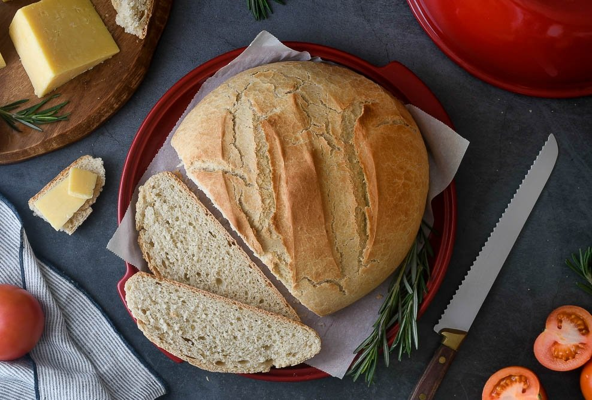
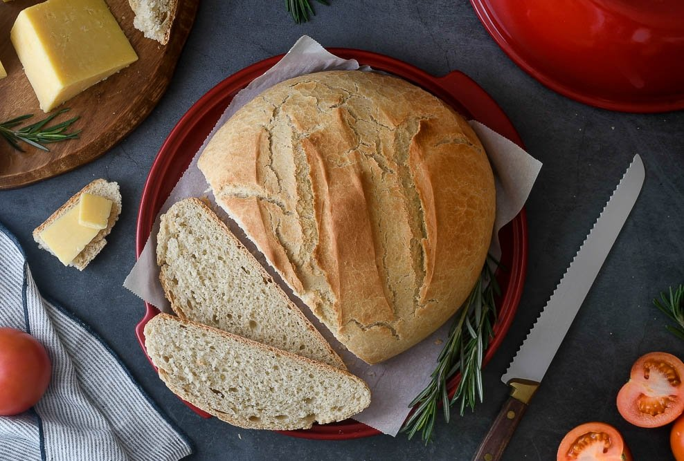

EL UNIVERSO DEL PAN CASERO
Recetas e ideas espaciales para cocinar el mejor pan casero
 

Una super receta
Ingredientes
- Harina
- Agua
- Levadura
- Sal
- Azúcar
- Aceite
Preparación
Colocamos la harina, el agua y la levadura. De a poco vamos mezclando hasta lograr una masa homogénea y lisa. Amazar y dejar reposar 40 minutos.
Nuestra Ubicación